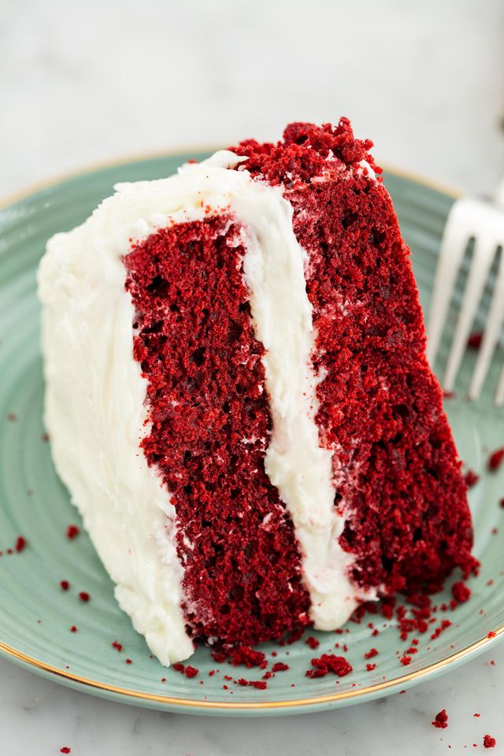

Christmas Recipes
Christmas Butter Cookies
Ingredients
- 1 c. butter (no substitutions)
- 1/2 c. sugar
- 1 large egg
1 tbsp. vanilla extract
- 3 c. all-purpose flour
- 1/2 tsp. baking powder
- Assorted colored granulated sugars for decorating
Procedures
- Preheat oven to 350ºF. In large bowl, with mixer at low speed, beat butter and sugar until blended. Increase speed to high, beat until light and creamy. At low speed, beat in egg and vanilla. Beat in flour and baking powder just until blended.
- Divide dough into 4 equal pieces. Wrap each piece with plastic wrap and refrigerate until firm enough to roll, about 1 hour.
- On lightly floured surface, with floured rolling pin, roll 1 piece of dough 1/8 inch thick. With floured 2- to 3-inch assorted cookie cutters, cut dough into as many cookies as possible, wrap and refrigerate trimmings. Place cookies, 1 inch apart, on large ungreased cookie sheet, sprinkle cookies with colored sugar now if you like, or frost with Ornamental Frosting after baking.
- Bake cookies 10 to 12 minutes, until lightly browned. Transfer cookies to wire rack to cool. If you like, brush colored sugar remaining on cookie sheets onto piece of waxed paper to use again. Repeat with remaining dough and trimmings.
- When cookies are cool, prepare Ornamental Frosting if you like, use to decorate cookies as desired. Sprinkle colored sugars as desired on frosting before it dries. Allow frosting to dry completely, about 1 hour. Store cookies in tightly covered container up to 2 weeks.

Red Velvet Cake
Ingredients
For the Cake
- Cooking Spray
- 1 c. (2 sticks) butter, softened
- 1 c. granulated sugar
1 tsp. vanilla extract
- 2 large eggs
- 2 1/2 c. all-purpose flour
- 1/4 c. Dutch-processed cocoa powder
- 1 tsp. baking soda
- 1 tsp. kosher salt
- 1 c. buttermilk
- 1 c. buttermilk
- 2 tsp. ditilled white vinegar
- 2 tbsp. red food coloring
For Cream Cheese Frosting
- 2 (8-oz) blocks cream cheese, softened
- 4 tbsp. butter, softened
- 4 c. powdered sugar
- 1 tsp. pure vanilla extract
- 1/4 tsp. Pinch kosher salt
Procedures
- Preheat oven to 350°. Line two 8" round cake pans with parchment paper and grease with cooking spray. In a large bowl using a hand mixer (or in the bowl of a stand mixer), beat butter and sugar until light and fluffy. Add eggs one at a time, beating well after each addition then add vanilla.
- In another large bowl, whisk together flour, cocoa, baking soda, and salt. Add half the dry ingredients to wet ingredients, beating until just combined. Add buttermilk, vinegar, and red food coloring, beating to combine. Add remaining dry ingredients.
- Divide batter between prepared cake pans and bake until a toothpick inserted into the middle comes out clean, 25 to 30 minutes. Let cool 15 minutes, then invert onto a cooling rack to cool completely.
- Meanwhile, make frosting: In a large bowl using a hand mixer (or in the bowl of a stand mixer), beat cream cheese and butter until smooth. Add powdered sugar and beat until light and fluffy. Add vanilla and salt and mix until combined. Add more powdered sugar, 1/4 cup at a time, if necessary, until frosting is thick and a nice spreadable consistency.
- Assemble cake: Using a serrated knife, level tops of cakes, reserving the scraps for decorating. Place one layer on cake stand or serving platter, then top with a thick layer of frosting and second cake layer. Frost top and sides of cake. Crumble reserved cake pieces and press onto sides of cake.
